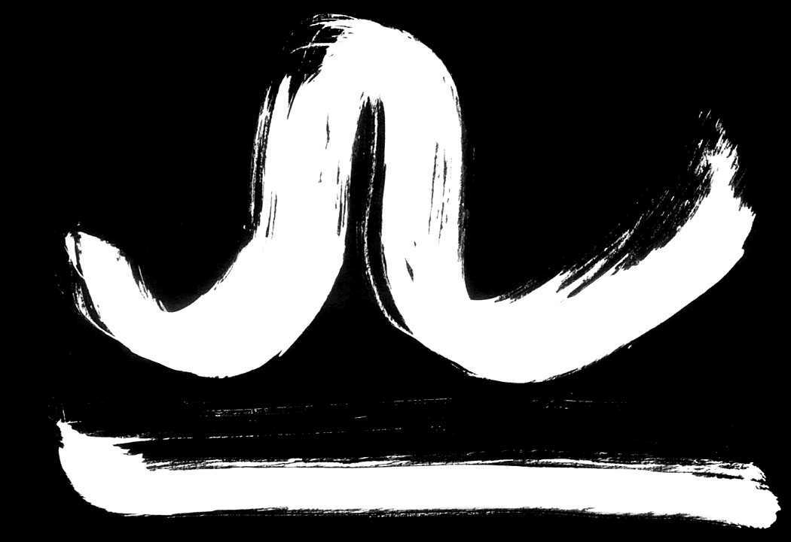

CapricornDecember 22- January 20As a earth sign ruled by Venus, they are confident, strong-willed and calm. Opportunities are coming. But you have to be willing and ready. |
 AquariusJanuary 21- February 20Honest and loyal, they fall into two types: shy and sensitive or exuberant and lively. Set your goals and focus on the prize. You may feel compelled to do some travelling. |
PiscesFebruary 21- March 20These people are compassionate, patient, and sympathetic. Work diligently and focus on your responsibilities. Try not to leave anything unfinished. |
 AriesMarch 21- April 19As the sign of new beginnings, they are adventurous, ambitious, and enthusiastic. Focus on work and making money. |
TaurusApril 20- May 20The characteristics of Taurus are solidity, reliability, and extreme determination. Spend time with your family. Your problems may seem confusing, but ask someone for sound advice. |
GeminiMay 21- June 21Gemini, the Twins, are dual-natured, intellectual, and versatile. Save time to remember those you love. Do not start a dispute, instead help those in need. |
CancerJune 22- July 23These people can range from timid and shy to brilliant and famous, but altogether loving and sympathetic people. Stay close to home and avoid stress. Take care of yourself. |
LeoJuly 24- August 23As the lion, they are extremely creative, warm-hearted, and enthusiastic. Remain calm and collected. Do not start any arguments. Pull everything together. |
VirgoAugust 24- September 22Virgo are modest, shy and diligent. In addition, they are intellectual, able to create a clear analysis for complex problems. These are circumstances beyond your control, so it's best to find something else to do. This is a great day to stay in and research matters that you may want to put to use. |
 LibraSeptember 23- October 22These people are easygoing, sociable, and peaceable, thus represent the scales. A close friend or lover may be restless and upset. This is the time to help others find their own solutions. |
ScorpioOctober 23- November 22Determined, intense, and intuitive, their signs are Scorpio, the scorpion. You're likely to find it difficult to make a decision about any options right now. Whatever you're considering, make sure you know all the facts before making a choice of any kind. |
SagittariusNovember 23- December 20Sagittarius represents people who are optimistic, good-humoured, and honest. Probelms and obstacles might appear in your way. Calm down and do what it takes to move on. |